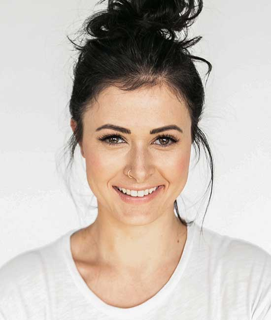

Удирдлага
Холбооны удирдлага
Мажаа Эрдэнэжав
Удирдлагын зөвлөлийн дарга
2024 оноос хойш удирдлагын зөвлөлийн дарга. Хөгжлийн бэрхшээлтэй иргэдийн эрх, оролцооны төлөө ажиллаж байна.

[Нэр нөхөх]
Удирдлагын зөвлөлийн гишүүн
Удирдлагын зөвлөлийн гишүүдийн мэдээллийг холбоогоос лавлана уу.

[Нэр нөхөх]
Гүйцэтгэх ажилтан
Өдөр тутмын үйл ажиллагааг хариуцан ажилладаг гүйцэтгэх ажилтны мэдээлэл.
Удирдлагын бүрэлдэхүүний мэдээлэл нь улсын бүртгэлийн сүүлийн өөрчлөлтийн дагуу. Дотоод бүтэц, гишүүнчлэлийн дэлгэрэнгүйг холбоо барих хэсгээс асууна уу.